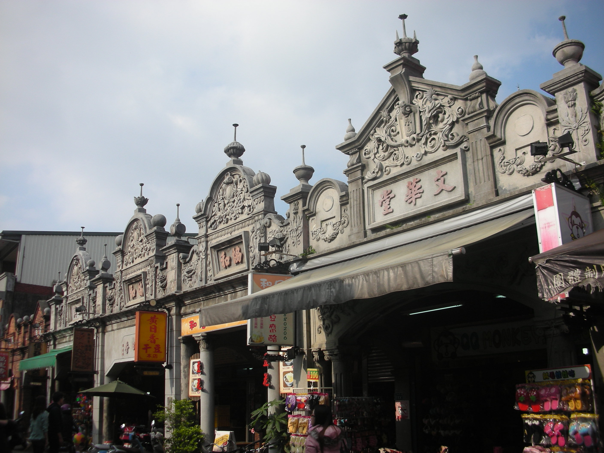
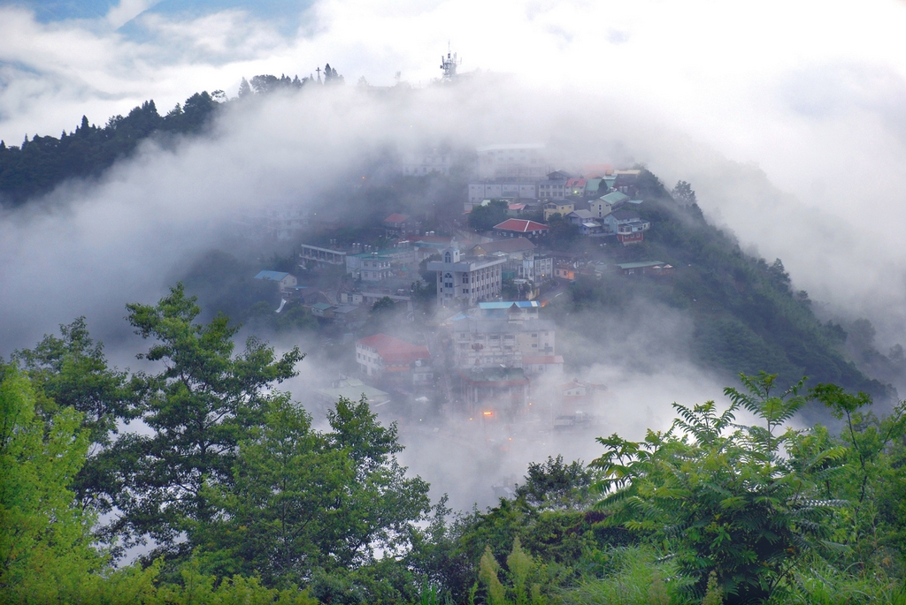
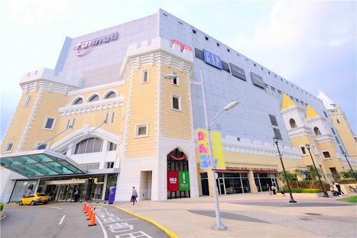

探索桃園
桃園市位於台灣的西北部，擁有豐富的自然景觀和人文景點。以下是桃園著名的景點：

大溪老街
大大溪老街是位於台灣桃園市大溪區上的歷史聚落群，主要是指位於大溪區上的和平路、中山路以及中央路所留存之歷史建築群。 該區域因保存大量於日治時期所興建之街屋群，因而大溪鎮上最具代表性之景點。 目前老街上多數已被桃園市文化局登錄為歷史建築。 並在當地產業發展下進行改建或再利用計畫。

拉拉山
達觀山原名拉拉山，位於桃園市復興區與新北市烏來區的交界。民國62年（西元1973年）文化大學教授在這裡發現了大片的神木林，從此成為眾所矚目的休閒新據點。也因其林相相當豐富，並擁有全臺灣面積最大的紅檜森林，於是政府在民國75年（西元1986年）正式成立達觀山自然保護區，範圍涵蓋北橫巴陵附近山區。達觀在泰雅族語裡，是「美麗」的意思。園區內林種豐富，如青楓、紅榨楓、山毛櫸等變色葉木，每當深秋，綠葉轉黃、轉紅，別富詩意。遊客可儘情欣賞這些樹齡在五百年至三千年左右，饒富特色，像神話般存活著的紅檜巨木。

台茂
台茂購物中心位於桃園南崁，於1999年7月4日開幕，為台灣第一家大型購物中心。 目前產權為「德國最大退休基金(BVK)」與「樂富一號不動產投資信託基金(Millerful No.1 REIT）」共同投資持有，並由「台茂商場經營管理顧問有限公司」負責營運管理與規劃，台茂是桃園市的一個知名購物中心，擁有眾多的商店、餐廳和娛樂設施，是購物和休閒的絕佳去處。

中壢觀光夜市
全長700公尺、超過400攤，蒐羅各式銅板美食，讓你花小錢就能遍嚐特色小吃，吃飽喝足就要開啟購物模式，輕鬆買齊當季行頭。 中壢觀光夜市位於中壢區新明路，範圍在中央西路口與民權路口之間，全長約為700公尺，是桃園市數一數二的觀光夜市。